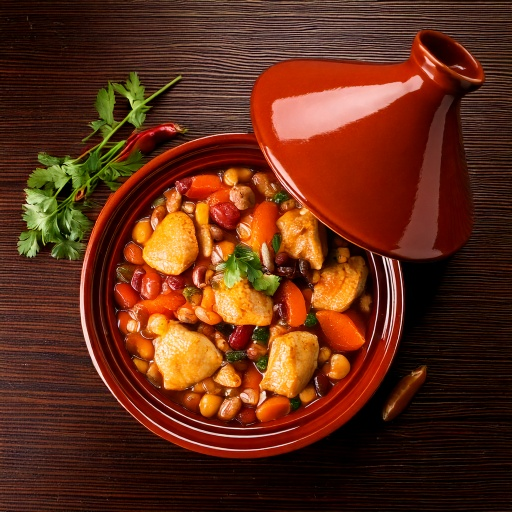

Braised na chicken thighs na may garbanzos, kamatis, dried apricots, at mainit-init na spices.
Impormasyon sa Nutrisyon (bawat serving)
417
Calories
29g
Carbs
38g
Protein
17g
Fat
7g
Fiber
~40
GI Est.
Bakit Ito Bagay sa Diyetang Diabetic-Friendly
Sa 29g na carbs kada serving, sulit itong pagsamahin sa protein o fat at bantayan ang laki ng serving para mabagal ang pagtaas ng asukal sa dugo, at ang tinatayang glycemic index nitong ~40 ay nangangahulugang mabagal ma-digest ang carbs nito sa halip na biglang magpataas ng asukal sa dugo, at ang 7g ng fiber kada serving ay nagdaragdag ng parehong epekto ng pagpapabagal sa absorption.
Mga Sangkap
- 1 1/2 lb680 g chicken thighs
- 1 1/2 cup355 ml garbanzos
- 1 cup235 ml tinadtad na kamatis
- 1/3 cup80 ml dried apricots
- 1/2 tsp2 ml kanela
- 1 tsp5 ml cumin
- 1 whole1 whole sibuyas
- 2 tbsp30 ml olive oil
Paraan ng Paggawa
- I-brown ang chicken sa olive oil, pagkatapos ilagay muna sa gilid.
- I-saute ang sibuyas kasama ang kanela at cumin hanggang mabango.
- Ibalik ang chicken sa palayok kasama ang kamatis, garbanzos, at dried apricots.
- Lutuin sa mahinang apoy, may takip, ng 25–30 minuto hanggang malambot ang chicken.
Sa GlucoBeacon
Isa ito sa mahigit 150 recipe sa Recipe Library ng GlucoBeacon, bawat isa may kumpletong nutrition breakdown, glycemic index estimate, at one-tap logging diretso sa blood sugar history mo. I-download ang GlucoBeacon sa Google Play →